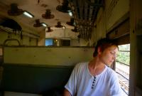
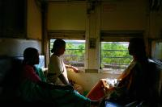

|
Jeudi 8 mars
A regrets, et après un dernier bain matinal, nous quittons la plage de rêve
de Palolem et Robinson Crusoé pour Cochin. Nous avons coupé le trajet: Goa-Magalore
et Mangalore-Cochin le lendemain. On pense être ainsi plus frais pour surveiller
les bagages dans le train... qu'on croit, parce-qu'après un trajet fort sympathique
(395 km, 48 roupies chacun, soit moins de 10 FF) de 14H45 à 21H00, on découvre
que le seul train pour Cochin part à 3H45 du matin... En plus, les "restrooms"
(lits) de la gare sont fermés pour réparations... Alors on a presque envie d'aller
chercher un bus de nuit pour Mysore! On stagne dans la gare en compagnie des
rats (plutôt costauds) et cafards avant de nous résigner à attendre dans la
"waitingroom" (chaises) des hommes. En effet, celui réservé aux femmes et enfants
est interdit aux hommes, tandis que les femmes peuvent accompagner leur mari
dans celui des hommes. Mais comme on a du temps à passer, on décide de manger...
toujours à la gare. C'est terrible! On est passé dans le sud, ça se sent! On
ne peut rien avaler, à part le riz blanc et les oignons. Les oignons, c'est
du petit lait par rapport au reste qui est épicé à mort! Et pas de thé ni de
tchaé pour faire passer, la boutique est fermée... Nous sommes maintenant dans
la waintingroom en compagnie des ronflements de ses occupants qui roupillent,
qui sur des chaises, qui allongé par terre. De toutes façons, les Indiens ont
une faculté incroyable pour se mettre à l'aise partout. Tiens, en voilà un qui
baille fort bruyamment. En face de moi, il y en a un autre qui dort sur du papier
journal, c'est plus propre que le sol, allongé sur le dos avec les jambes en
tailleur parce-qu'il y a une chaise devant lui et qu'il ne peut pas les étendre!
L'art d'épouser les formes en souplesse. On avait déjà vu cela dans le bus Udaïpur
Bombay: les hommes, gamins et papys encastrés dans l'allée ET les uns dans les
autres, jambes, têtes, fesses s'imbriquaient les unes aux autres! Lionel essaie
de dormir - avec moins de souplesse que les indiens - et rouspète " Quelle idée
débile on a eue! Et si on se trouvait un hôtel ? Ca vaudrait quand même le coup
!?!" Trop tard! Il est presque 11H00 du soir déjà... ou seulement. Et Lionel
continue à maugréer: "Je l'avais bien dit, on aurait dû le faire dans les Vosges
ce tour du monde!!!". Vivement demain soir qu'on se couche !
Au fait, à propos de la circulation routière, on avait vu un truc rigolo à
Delhi, alors que tout le monde circulait de façon complètement anarchique, ne
respectant même pas le pauvre policier qui se débatait sur son îlot surélevé
au milieu du carrefour pour tenter de faire la circulation. Ce truc rigolo,
c'était un grand panneau avec écrit dessus: "S'il vout plaît, essayez de respecter
le code de la route"!!! Ben ca, moi je croyais que c'était un truc obligatoire
le "code de la route"!? On m'aurait menti?
Pendant que j'écris des trucs pour rester éveillée, le ch'tit pépère désespère
à côté de moi, tout inconfortablement tordu pour essayer de dormir mi-assis,
mi-couché sur son sac! Une sorte de militaire vient de passer dans la salle
et nous a dit d'une voie caverneuse: "Be careful your luggage".
" Je vais aller chercher un flingue et buter quelqu'un, comme ça, pour me détendre...
Pourquoi? 6 heures de train, 7 heures dans la gare, puis encore 10 heures de
train, c'est pas une bonne raison pour avoir envie de tuer quelqu'un ça? " Et
le voila reparti dans son délire de tour du monde dans les Vosges… Il y a un
mec hyper louche en face de moi, il fait semblant de dormir et semble m'observer:
je le vois m'espionner un peu trop souvent, serait-ce un gangster? Lionel, mis
au courant de cette info capitale, se lève : " je vais faire un petit tour,
cela va l'impressionner " et il déambule devant le gangster et roulant des mecaniques!
" S'il bouge, il va se manger un coup de pompe dans la tronche... ca tombe bien,
j'ai envie de buter quelqu'un. "
Vendredi 9 mars
Il est presque 9H00, le temps passe vite... Enfin non, pas vraiment. J'ai veillé
jusqu'à 5h00 du mat' et Lionel, qui n'avait pas réussi à vraiment dormir, a
pris le relais... en pleine forme. Ce qui est cool, c'est qu'on a chacun une
banquette face à face, on peut donc s'allonger à demi et dormir tout tordus.
Malheureusement, Lionel a fini les 2 livres qu'on a emmenés : un San Antonio
et les "tribulations de Tiffany Trott" très rigolo. Heureusement, on se partage
un excellent bouquin acheté a Delhi 80 rps: "Cette nuit la liberté" de Dominique
Lapierre et Larry Colins. Ca raconte façon romancée l'histoire de l'indépendance
de l'Inde en 1947, comment c'était avant. Bref. c'est super et ça tient longtemps:
700 pages.
Le truc avec le train, c'est qu'on dirait que ce sont tous des TER, ou mieux,
des métros! Ils s'arrêtent presque à chaque maison! Tous les 1/4 d'heure, on
est arrêtés alors, évidemment qu'il faut 10 heures pour faire les 412KM qui
séparent Mangalore de Cochin. 40 km/heure,ça fait une bonne moyenne, non? En
tous cas, on a tout le loisir d'admirer le paysage. Et certains préjugés éclatent.
Je croyais qu'en descendant dans le sud, le paysage serait de plus en plus aride
et c'est tout le contraire, la végétation est de plus en plus luxuriante, il
y a de plus en plus d'eau (mares, lacs....). Mais côté température, pas de surprise,
on n'a pas froid. On voit de plus en plus de femmes se déplaçant avec un parapluie...
pour se proteger du soleil. Depuis 9h00 ce matin, le train ne désemplit pas.
Dès qu'une fournée descend, une autre monte et on est en permanence 3 par banquette,
c'est fort petit pour nos gros posterieurs d'européens! Dans le train, l'animation
est permanente: défilé de mendiants (2 par heure) et de gars de la SNCF indienne
qui vendent de tout (tchaé, café, boissons fraiches, trucs fourrés genre samosa,
sandwich a l'omelette, chips, fruits, biscuits, etc, etc). Il y en a un en particulier
que j'ai appelé le canard. Je n'ai toujours pas compris s'il vend tchaé ou café
mais il passe toutes les 10 minutes en répétant inlassablement d'une voix rauque
un "coin", en tout cas, c'est ce que je comprends! Difficile de dire s'il cancanne
tchae ou coffee.
Lionel dort enfin. Il est 10h00. On est serrés comme des sardines, plus que
4 heures à tenir en principe. En plus, on est tout poussiereux. Entre la poussière
de dehors qwui rentre par portes et fenêtres grandes ouvertes, la fumée du train
et la poussière (très dense) du dedans déplacée par l'air que brassent ventilateurs
et courants d'air naturels, on est tout dégueu et ça pique les yeux. Avec la
moiteur ambiante favorisée par l'extrême proximité (on est scotchés les uns
aux autres), c'est plutôt TRES désagréable. Pour raccourcir le trajet, on atend
1 heure dans une gare par 38 degrés. Ca fait chaud, on ne sent même pas le vent
bienfaisant des ventilateurs. C'est parce-qu'il n'y a qu'une voie et qu'il faut
attendre l'arrivée du train qui l'utilise déjà. Une seconde est en construction.
Pendant ce temps, je suis en grande conversation avec mon voisin étudiant
en informatique qui va bientôt bosser chez Cisco aux USA. Ce qui me rassure,
c'est qu'il trouve qu'il fait chaud (d'habitude il ne fait que 30 degrés). Faut
dire qu'ici, c'est l'été ! D'ailleurs, les vacances scolaires démarrent en avril
et finissent fin mai. Mon voisin parle bien l'anglais, mais à l'indienne: à
toute allure et en roulant les r, les p, les t... tout l'alphabet quoi! Pour
ne pas le vexer, vu que je lui fais tout répéter 3 fois (sauf quand j'abandonne,
là j'acquiesce juste en souriant!), je luis ai dit que je parle très mal anglais.
Il m'a repondu "je sais, les français les japonais ne parlent pas l'anglais".
Non mais, quel culot! Avce son accent à la noix! Cela dit, il doit aussi trouver
que j'ai un accent de chiotte vu que tous les indiens parlent anglais comme
lui (il fera moins son malin avec les américains he! he! he!). Quand on écoute,
ca donne: "ble ble bla bla debele, nelde...". Charabia. Lionel est tout content,
le train a pris une heure de retard! Drôle de raison de se rejouir! En fait,
c'est que ça nous aura fait 24 heures de voyage et que c'est beaucoup plus symbolique
que 23! Pourvu que ca ne s'aggrave pas. Et ce train qui ne désemplit pas.
Suite du voyage : Cochin
|

Inde
Mangalore
|

Inde
Mangalore
|
|
|